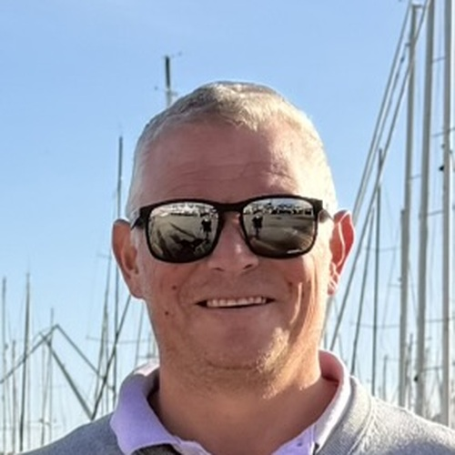
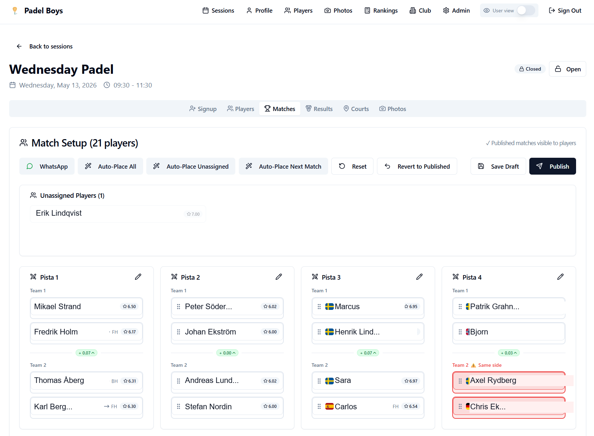
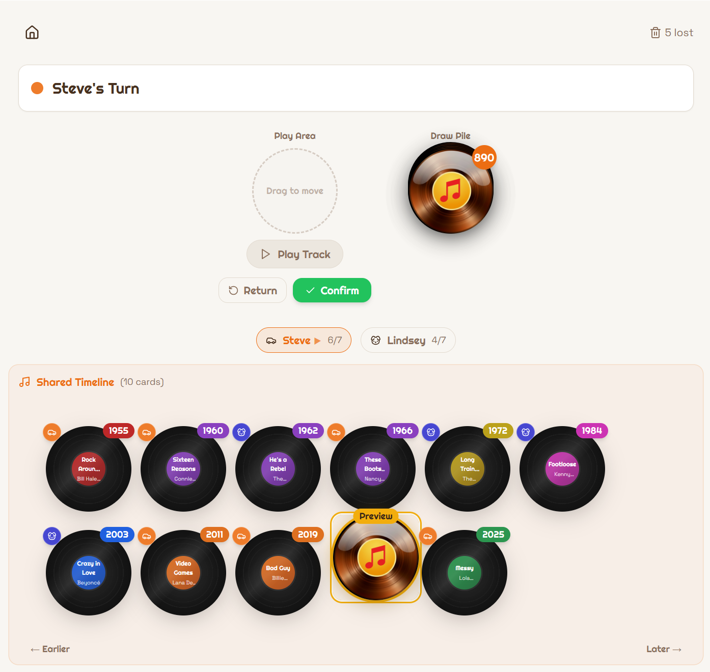

27 years of IT leadership at global scale. Now building real products — fast — using AI as a force multiplier.

In 1999 I co-founded Empir AB from scratch and built it into a recognised technology consultancy. Over the next two decades I scaled into CTO roles at SunHotels and WebBeds — navigating three major acquisitions and unifying platforms across the Webjet group — before taking on Director of Engineering at Sembo, part of Stena Line Travel Group.
Throughout that journey I learned that the gap between a great idea and a working product is almost always about people and process, not technology. I know how to close that gap.
In 2025 I began a new chapter: using AI as a development partner to build real, production-grade applications faster than traditional timelines would allow. The products span padel clubs, kayaking routes, music games, children's learning tools, and enterprise dispatch systems — all shipped and in active use.
Alongside building, I work as an AI Catalyst — meeting with organisations to identify where AI genuinely creates business value, defining roadmaps that move from curiosity to implemented initiatives, and talking clients away from projects that won't pay back. Twenty-seven years of leading technology at scale means I speak both languages: the boardroom and the codebase.
Current tech stack
Production-grade applications across padel, hospitality, music gaming, football quizzes, golf tracking, logistics, IoT, e-commerce, transfer booking, and data engineering — each solving a real problem for real people. Built with AI, deployed with intent.
TypeScript · Hospitality Platform
Hospitality product for Husby Wärdshus, built to support day-to-day operations with a modern booking and service flow tailored to a real business. The platform highlights a production-ready web stack and the ability to turn a traditional hospitality operation into a smoother digital customer experience.
Stripe-powered online payments are a core part of the solution, making it easy to handle paid bookings and customer transactions without pushing work back into manual admin.
TypeScript · Full-stack SaaS
Full padel club management — session scheduling, drag-drop court assignment, Elo-style ranking with scenario modelling, match results, photo galleries, WhatsApp share, push notifications, and a complete admin suite with audit logs. Includes a natural language AI assistant (Claude) that lets admins query live club data — rankings, sessions, signups, payments, and preferences — in plain English.

TypeScript · Multiplayer Game
Multiplayer music timeline game built on Supabase Realtime for low-latency presence and game-state sync — the architectural choice that made real-time sudden-death mechanics possible without a custom WebSocket layer. iTunes previews, curated decks — Beatles, Elvis, Eurovision, ABBA, Kent.
tunetrail.app ↗
TypeScript · Multiplayer Game
Multiplayer football club logo quiz. Players race to identify crests from hundreds of European clubs. Lobby system, time-based scoring, leaderboard across Premier League, La Liga, Bundesliga and more.
TypeScript · Group App
Golf group tracker for a betting pool. Manage rounds, record scores, season standings, economy ledger — fees, penalties, payments. Per-round photo galleries. Full admin panel.
TypeScript · Business
Logistics dispatch management system — agency management, vehicle registry, job dispatch, real-time sales reports, role-based auth with pending approval flows. Built for a transport operation in Cancun.
TypeScript · IoT
ChatGPT-style interface for Netatmo personal weather station owners. Sensor readings synced on a cron schedule via Cloudflare Workers, stored in Supabase, and queryable in natural language.
Python · Data
LLM-queryable copy of Systembolaget's full ~25k product catalog, working around the API's 10k cap via category and price sharding. Text-to-SQL via OpenRouter; enriched with APK (grams of alcohol per krona) and other derived metrics. CLI + ChatGPT-style web UI.
systembolaiget.pages.dev ↗TypeScript · E-commerce
E-commerce site for a handmade crystal jewellery brand in Mallorca — product catalogue with category filtering, order flow, photo gallery, and a full admin panel for inventory and order management.
TypeScript · Business
Airport transfer and tour booking platform for Cancun — multilingual (ES/EN), Stripe payments, Google Maps route display, QR-code vouchers, and PDF booking confirmations.
Python · Data Engineering
Configuration intelligence platform for EmpirBus marine electronics (Garmin) — decodes the complete five-artifact delivery chain (LogiX, GraphiX, WDU bundle, firmware catalogue, installer I/O schedules) into a checksum-verified, cross-linked fleet registry. Processed 1,969 installations across 15+ brands and 3.34 million channels with zero parse errors and 100% firmware catalogue coverage. Enables commissioning QA, fleet-wide analytics, instant boat lookup with full channel traceability, firmware impact analysis, and a faithful pixel-accurate simulator of any boat's WDU screens.
C# · Desktop
Windows desktop utility for multi-stream sports viewing. Splits browser windows into configurable grids up to 3×3. Audio follows mouse. Global hotkey (Ctrl+Alt+W). Inno Setup installer.
View on GitHubPython · AI · DevOps
Containerised on-premise AI platform for an industry client — natural-language querying (Swedish/English) of production MES data in Elasticsearch, RAG document search with cited answers, Kibana dashboards auto-generated from plain-language prompts, per-user conversation memory, Active Directory login. Ships as a standalone AI appliance, the client's VMware environment, or their Azure tenant. Passed a formal multi-round security assessment covering TLS hardening, role-based access control, and identity-bound dashboards.
TypeScript · Web
Marketing website for a Scandinavian services company — hero, services showcase, gallery, about, and contact sections. Clean, responsive, and fast.
Norval Intelligence AB
Independent — alongside Norval Intelligence
Sembo — Stena Line Travel Group AB
WebBeds (Webjet Group)
WebBeds (Webjet Group)
SunHotels
Trigentic AB (alongside Empir AB)
Empir AB
Leadership Competencies
Languages
Education
Östrabo Gymnasium
Computer Science · 1994–1995 · Uddevalla, Sweden
Interests
Open to leadership roles, advisory positions, and conversations about building at the intersection of strategy and AI.